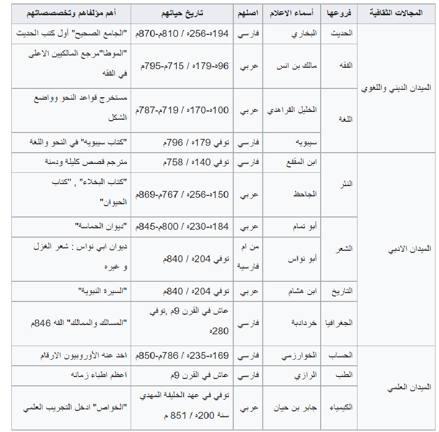

الانتاج الفكري في الدولة العباسية
شجع القرآن المسلمين على طلب العلم والمعرفة، كما ساهم
.تنوع الشعوب والثقافات واندماجها في المجتمع الإسلامي بعد توسع الدولة الإسلامية عن طريق الفتوحات الإسلامية والتبادل التجاري ، فعن طريق هذه الفتوحات تأثر المسلمون بالحضارات الآخرى فأخذوا الفلسفة والطب من اليونان والفلك والرياضيات من الهنود، والآدب والسياسة من الفرس.وظهر بين العرب علماء ومفكرون نبغوا في مختلف مجالات
الحياة الاجتماعية
ضمت الدولة العباسيّة أوطاناً كثيرة مع اتساع رقعتها، حيثُ كانت تعيش في ضمنها وتحت رعايتها الكثير من الشعوب والقبائل المختلفة في الجنس، والعرق، والثقافة، واللغة، والتي سرعان ما امتزجت مع العنصر العربيّ، وعاشوا في ظل الدولة العباسيّة بحرية تامة ودون قيود؛ لذا فقد ترك أبناء هذه القبائل والشعوب وخاصة الفرس منهم آثاراً واضحة في المجتمع العباسيّ، فقد أشاعوا في الحواضر التي يعيشون فيها عاداتهم وتقاليدهم وأنماط عيشهم في المأكل، والملبس، والمسكن، وكذلك بالاحتفال بالمناسبات والأعياد الخاصة بهم. كما أسهم التسامح والحريّة التي منحتهم إيّاها الدولة العباسيّة في بروز الحركات والنزعات العنصريّة المناهضة للعرب، ومنها النزعة الشعوبيّة التي شاعت بين أفراد المجتمع العباسيّ، وخاصة عند الموالي من الفرس، فهي في حقيقتها تُخفي الحقد الدفين على العرب ومآثرهم، مُحاوِلةً الحطّ من مكان ومنزلة القيم والأخلاق العربيّة، إلاّ أنّ الأدباء والعلماء تصدوا لها مُدافعين عن الإسلام وعن العرب، ناشرين الوعي بين أبناء الشعب عن خطورتها على الأخلاق والدين، ومنهم الجاحظ وابن قتيبة.
المجالات الفكرية في الحضارة الاسلامية وبعض روادها خلال العصر العباسي

تميّز العصر العباسيّ بالازدهار من الناحية العلميّة والعقليّة وخاصة في العصر العباسيّ الأول، وكان من مظاهر هذه الحياة التالي: الإقبال على حلقات العلم في الجوامع والمدارس، بهدف أخذ العلم من المشايخ والعلماء، وقد كان طلاب العلم يلتحقوا بما يُشبه المعهد في الوقت الحاضر دون شروطٍ أو قيود. استخدام الورق في الكتابة والتدوين، وقد نشأ أول مصنع لصناعة الورق على يد الفضل بن يحيى البرمكيّ، مما ساعد ذلك على إثراء المكتبات التي كانت منتشرة في أرجاء الدولة العباسيّة ومنها مكتبة درا الحكمة في بغداد. ترجمة ذخائر نفيسة ومُهمة من لغات أخرى كالهنديّة، والبابليّة، والفارسيّة، وقد ظهر عدد من المترجمين وأشهرهم: حُنين بن إسحاق، وثابت بن قُرَّة. اهتمام الخلفاء العباسيين بالثقافة والاحتفال بها، وذلك بوضع جوائز ماديّة لمن يؤلف كتاباً أو يُترجم مخطوطة.
بلغ الشعر في العصر العباسيّ مبلغاً كبيراً من التطور والازدهار، ففي هذا العصر ظهر الكثير من أبلغ وأصفح شعراء العربيّة، وذلك بدعمٍ من الخلافة العباسيّة التي وفرت جميع مقومات العيَشْ المُترف، وتأسيس المجالس الأدبيّة التي وفرت للشعراء جواً جيداً للقول الشعر، إضافةً إلى تطور المعايير التى يُقاس عليها الشعر، وهو ما يُعرف بالبحور الشعريّة التي وضعها الخليل بن أحمد الفراهيديّ، كما تعددت الأغراض الشعريّة التي نظموا، فهناك الوصف الذي أبدعوا فيه كوصف حوانيت الخمر، ووصف القيان والجواري المُغنيات. إلى جانب المدح، والذي شاع في هذا العصر من أجل الكسب الماليّ وخاصةً للخلفاء العباسيين الذين أغدقوا الشعراء المدَّاحين بالعطايا والهدايا، ناهيك عن الأغراض الشعريّة الأخرى والمعروفة، ومن شعراء هذا العصر: المتنبيّ، وأبو العلاء المعريّ، وأبو تمام، وأبو نُواس، والبحتريّ، وأبو العتاهيّة، وبشار بن بُرد، وغيرهم الكثير من فحول الشعر العربيّ.
created with
HTML Creator .